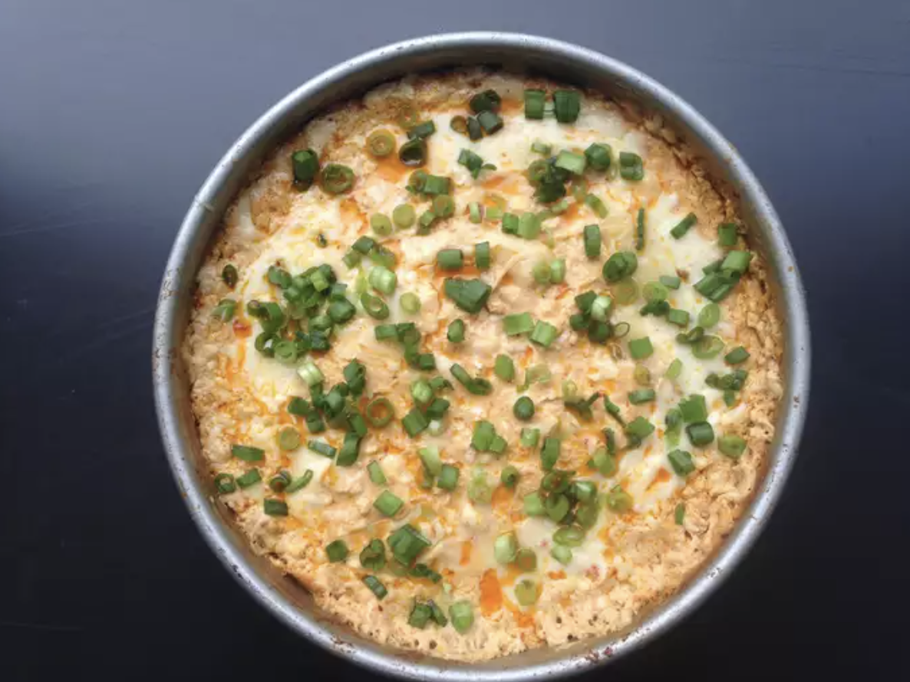

Buffalo Chicken Dip

Make this baked Buffalo chicken dip if you're ready to bring more than just a bag of chips to a game-watching party. You will become an appetizer all-star! Serve it warm with celery and crackers to party guests who won't be able to stop eating it.
Ingredients
- 3 cups diced cooked rotisserie chicken
- 2 (8 ounce) packages cream cheese, softened
- ¾ cup hot pepper sauce (such as Frank's RedHot)
- ½ cup shredded pepper Jack cheese
- ½ cup blue cheese dressing
- ½ cup crumbled blue cheese
- ½ teaspoon seafood seasoning (such as Old Bay)
- 2 pinches cayenne pepper, divided
- 2 tablespoons shredded pepper Jack cheese
- 1 tablespoon thinly sliced green onions (optional)
Directions
- Preheat the oven to 400 degrees F (200 degrees C)
- Sir chicken, cream cheese, hot pepper sauce, 1/2 cup pepper Jack, blue cheese dressing, blue cheese, seafood seasoning, and a pinch of cayenne pepper together in a large bowl until well combined. Transfer to a 9-inch round baking dish and smooth into an even layer. Sprinkle 2 tablespoons pepper Jack over top.
- Bake in the preheated oven until lightly browned on top, 15 to 20 minutes. Remove from the oven, add another pinch cayenne pepper, and sprinkle green onions over top.